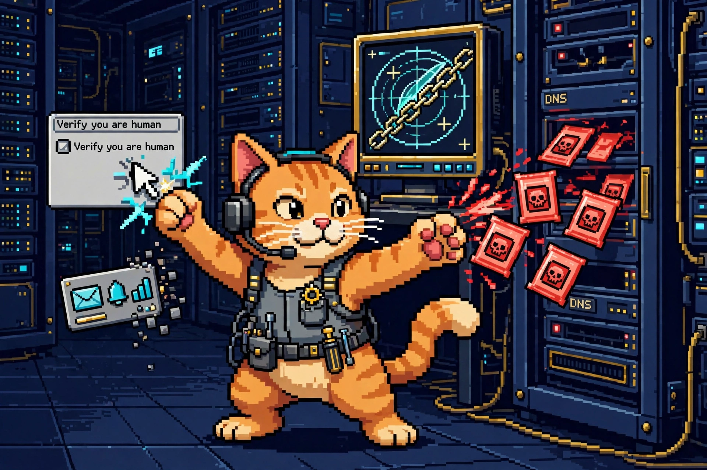

Cyber SOTU: The Week the Supply Chain Sprung a Leak (Sep 13–20, 2026)
A Brevo supply-chain attack that poisoned 100K websites, the 23.6M-account Gyazo breach, a CVSS 9.8 Check Point flaw, a critical Unbound DNS bug, and Claude used to hack OpenAI itself. The week in security, samson-bot style.